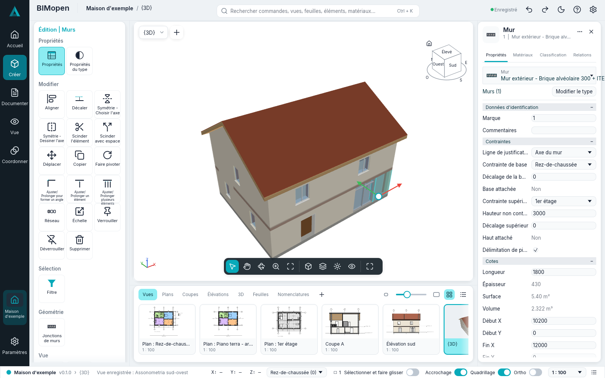
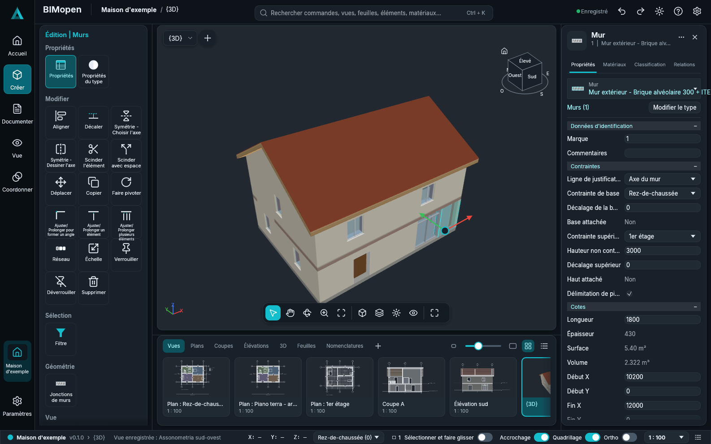

Styles d'interface
BIMopen a deux styles d'interface. Tous deux exécutent les mêmes commandes, avec les mêmes noms, les mêmes raccourcis clavier et les mêmes résultats ; seuls l'aspect et la place des outils changent.
- Le style Revit, décrit dans L'interface : le ruban, la barre des options, la palette Propriétés et l'Arborescence du projet. BIMopen démarre dans ce style.
- Le style BIMopen : une barre latérale, une recherche de commandes, des cartes d'outils, des outils flottants sur la vue, un panneau d'élément à onglets et une bande de vignettes des vues.
Choisir le style
- Ouvrez le menu de l'application et choisissez Options (dans le style BIMopen, l'engrenage à l'extrémité droite de la barre supérieure).
- Sous Interface utilisateur, réglez Interface sur Revit ou BIMopen.
La fenêtre change aussitôt. Le choix est mémorisé, sur l'ordinateur et dans le navigateur, et la session suivante démarre dans le même style. Thème (Clair ou Sombre) s'applique aux deux styles.
Le style BIMopen

| Partie | Où | Ce qu'elle contient |
|---|---|---|
| Barre latérale | Bord gauche | La marque de BIMopen (le menu de l'application), Accueil (le projet), Créer, Documenter, Vue, Coordonner, le projet ouvert et Paramètres. Elles remplacent les onglets du ruban. Un clic sur l'entrée sélectionnée replie le panneau d'outils |
| Barre supérieure | En haut | Le projet et la vue active, la recherche de commandes, annuler et rétablir, l'état de l'enregistrement, le thème clair ou sombre, le menu ? et Options |
| Panneau d'outils | À gauche, près de la barre latérale | Les onglets du ruban en groupes de tuiles, chaque commande une fois : Créer a Début et Insérer (avec l'onglet Architecture), Documenter les feuilles et Annoter, Vue l'onglet Vue et l'Arborescence du projet, Coordonner Requête, Paramètres Gérer. Pendant qu'un outil travaille ou que quelque chose est sélectionné, l'onglet contextuel (« Modifier | Murs » : déplacer, copier, faire pivoter, symétrie, ajuster, aligner, modifier le profil, Terminer le mode d'édition…) est en haut ; Esc ou un clic dans le vide l'enlève |
| Bande des options | Sur la vue, pendant qu'un outil travaille | Les options de l'outil (hauteur, ligne de justification, chaîne…), la barre des options du style Revit |
| Vue | Au centre | Le sélecteur de vue et + pour une nouvelle vue. Une seule barre de vue, en bas au centre : sélectionner, les modes Panoramique, Orbite (3D) et Zoom (quand l'un est actif, le bouton gauche fait glisser la vue ; Esc le termine), zoom adapté | le style visuel, le niveau de détail, Soleil et ombres (3D), Cadrage (cadrer la vue, afficher la zone cadrée), Visibilité (masquer et isoler temporairement, afficher les éléments masqués) | plein écran. Dans les vues 3D le ViewCube (un clic sur une face, une arête ou un coin regarde depuis là, un glissement fait orbiter, la maison revient à la vue de départ) ; sur la sélection, les flèches de déplacement (faites-en glisser une pour déplacer le long de celle-ci, le centre pour déplacer librement en plan : la distance s'affiche pendant le glissement, le relâchement déplace comme Déplacer) |
| Panneau d'élément | À droite | L'élément sélectionné : Propriétés (les mêmes paramètres que la palette Propriétés), Matériaux (les couches de son type avec leurs couleurs et épaisseurs, et un aperçu en couches), Classification (catégorie, type, classe IFC) et Relations (niveau, hôte, portes et fenêtres hébergées, vues et nomenclatures). Sans sélection, les propriétés de la vue active |
| Bande des vues | Sous la vue | Les vues par genre (Vues, Plans, Coupes, Élévations, 3D, Feuilles, Nomenclatures) en vignettes ou en liste ; un clic ouvre la vue, + en crée une nouvelle |
| Barre d'état | En bas | Le projet et la version, la vue active, l'invite de l'outil actif, les coordonnées du curseur, le niveau actif (son menu ouvre le plan d'un autre niveau), le nombre d'éléments sélectionnés (il ouvre Filtre), les interrupteurs Sélectionner et faire glisser, Accrochage, Quadrillage et Ortho, l'échelle de la vue et le journal des commandes |
Les onglets Structure et MEP de Créer indiquent que ces disciplines ne sont pas encore dans BIMopen.
Recherche de commandes
Appuyez sur Ctrl+K, ou cliquez dans la zone de recherche de la barre supérieure, et tapez quelques lettres : la liste montre les commandes, vues, feuilles, nomenclatures, éléments et matériaux qui correspondent. Cliquez sur un résultat, ou choisissez-le avec les flèches et appuyez sur Enter : une commande démarre, une vue s'ouvre, un élément est sélectionné et montré, un matériau s'ouvre dans Matériaux.
La zone de recherche est aussi la ligne de commande du style. Ce que l'on tape dans une vue y
arrive, comme dans la ligne de commande du style Revit, et Enter exécute tel quel un
raccourci clavier (WA, DR, ZF…) ou une commande avec ses arguments (wall 0,0 5,0). La
liste des commandes est dans Ligne de commande et MCP.
Menu contextuel
Dans les plans, les coupes et les vues 3D, le bouton droit ouvre un menu sombre : avec une sélection, d'abord les commandes de modification (Déplacer, Copier, Faire pivoter, Aligner, Décaler et les autres), puis les mêmes entrées que le menu de la vue dans le style Revit.
Tout le style Revit
Chaque fonction du style Revit est dans le style BIMopen, une seule fois :
- chaque bouton du ruban est une tuile du panneau d'outils, dans l'entrée de la barre latérale qui contient son onglet, et l'onglet contextuel Modifier est en haut du panneau pendant qu'un outil travaille ou que quelque chose est sélectionné ;
- la marque de BIMopen en haut de la barre latérale ouvre le menu de l'application ; la barre supérieure a annuler, rétablir et le menu ? ;
- Vue contient toute l'Arborescence du projet, avec ses menus ;
- une vignette de la bande des vues se fait glisser sur la feuille ouverte, ou sur la vignette d'une feuille, et son menu contextuel a les actions de l'arborescence et Ouvrir dans la fenêtre active ;
- le menu du sélecteur de vue organise les fenêtres des vues (Changer de fenêtre, Mosaïque, Cascade, Agrandir, Répliquer, Fermer masquées) ; Ctrl+Tab passe à la fenêtre précédente.
Clair et sombre

En arabe, toute la fenêtre est en miroir, dans les deux styles : la barre latérale et le panneau d'outils sont à droite, le panneau d'élément à gauche.